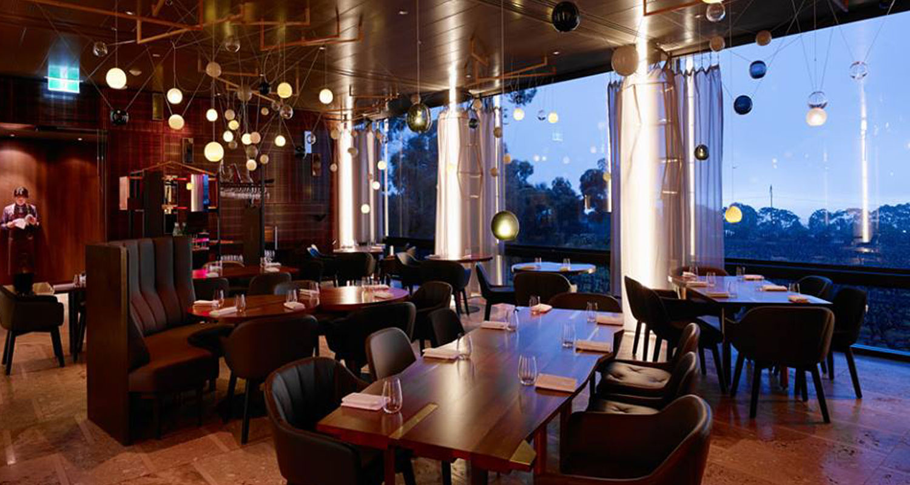
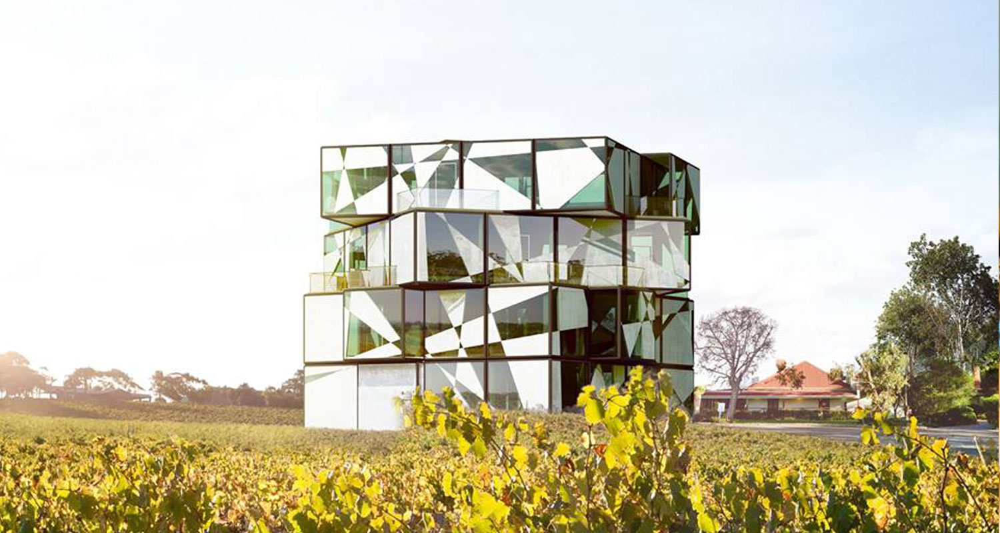
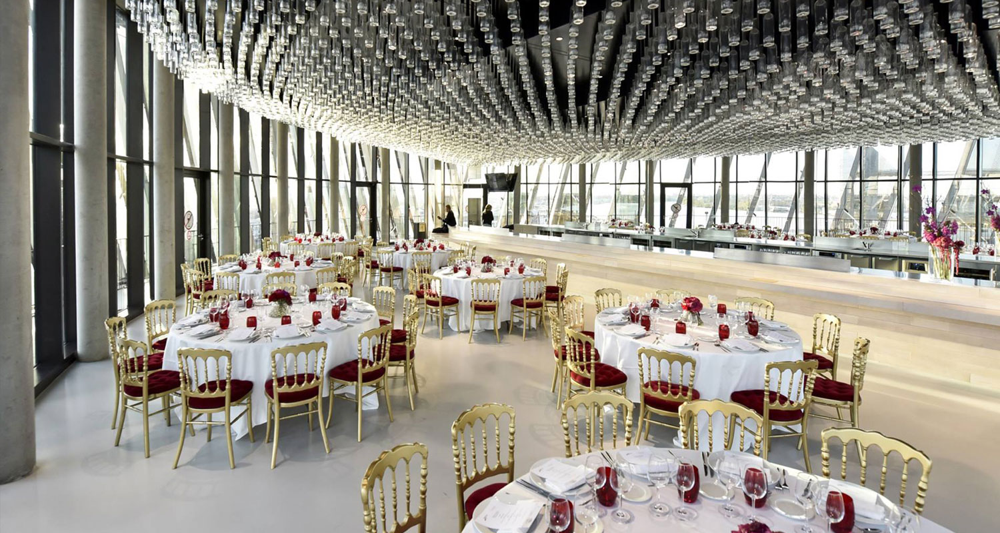
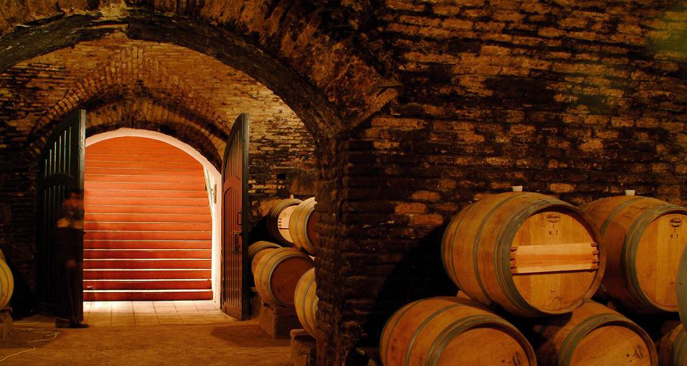
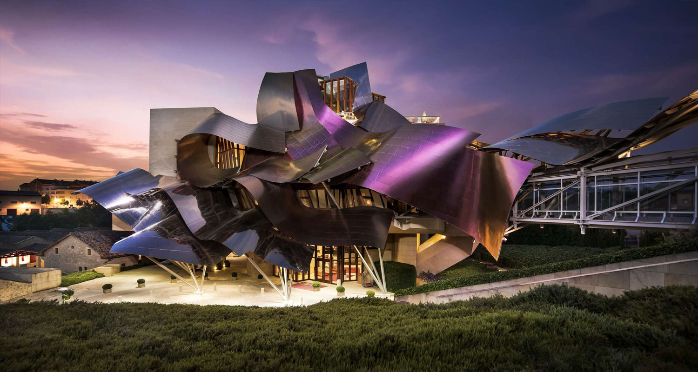

Top 5 most wonderful wine hotels in the world
Are you thinking about exciting travel vacations, new destinations where you can enjoy the scenery, sip and understand more about wine? Here's a hint from Wine Enthusiast magazine, on the list of Best Wine Hotels in the World.
1. Penfolds Magill Estate, Adelaide, South Australia
The Penfolds homeland and the legendary Grange bottle are a place not to be missed by Australian wine aficionados. The Magill Estate estate is not far from the center of Adelaide, it is totally worth your time to travel by taxi to "get there, see for yourself" where the great wines are produced.

Worthy of the famous name of Penfolds, the estate is organized very reasonably and there are many different discovery packages for you to choose. The cellar door opens to welcome guests from 9am to 6pm. You can reserve a tour of the vineyard, dine at a fine-dining restaurant, or join a special tour to explore the estate at sunset and enjoy a fine wine dinner.
If you are staying in Adelaide for a few more days, one worth visiting is the d’Arenberg estate with the famous ‘Cube’ at McLaren Vale.
2. D’Arenberg Winery Cube, McLaren Vale, South Australia
D’Arenberg is the author of a multi-storey, multi-million dollar Cube Cube project located in the heart of the McLaren Vale estate.

The complex includes wine tasting rooms, art galleries, bars and upscale restaurants. There is also a virtual reality experience area and a wine sensory room - to experience the unique flavors and textures of the wine.
Rubik Cube has been awarded the Good Design Awards 2018, one of Australia's most prestigious architectural awards.
In the first month of opening - December 2017, the project welcomed an average of 1,000 visitors per day. The wine cellar is currently open to visitors from 10am to 5pm daily.
3. La Cite Du Vin, Bordeaux, France
Since opening in 2016, La Cité du Vin (Wine City) has become a destination that tourists to Bordeaux, France cannot miss.

In order to create favorable conditions for tourists who have a busy schedule, Decanter magazine had a talk with the Director of La Cité du Vin and Mr. Philippe Massol to ask him for advice on the most attractive points when visiting. over this huge building. Because nobody could have known better than him. Here are a few suggestions on his ‘must do’ list.
On the top floor of La Cité du Vin is a large-scale Belvedere wine tasting room, surrounded by clear glass, with a 360 ° view of the city of Bordeaux. There are many different styles of wines, with friendly and experienced bar staff.
With one of the most diverse wine collections in the world, Latitude20 wine shop presents wines from more than 70 countries around the world. Visitors looking to purchase wine-related products such as books, games, cosmetics, stationery, household items, accessories and souvenirs can also visit the 250m² concept store: La Cité du Vin Boutique.
4. Concha Y Toro & Casillero Del Diablo Winery, Maipo Valley, Chile - One of the most beloved Wine Brands globally 2019
With the majestic Andes mountains sprawling against the clear sky, the Maipo valley is one of Chile's most beautiful lands, and is also home to the finest wines.

Maipo is the territory of red wine, with gravel soil, warm daytime weather and cold night, creating the perfect conditions to produce fragrant wines with smooth acrid taste. Puento Alto is the most prominent area of the Maipo valley, the nursery of three Chilean "national treasures", including Don Melchor of Concha y Toro.
Maipo is also home to some of Chile's largest wineries. An interactive discovery tour with Concha y Toro and Casillero del Diablo, will be one of the most unique experiences. You will taste excellent wines and visit the Devil's Wine Cellar, where this wine legend dates back more than 100 years ago.
The building still stands through the test of time. The earthquakes that once occurred here did not leave any cracks in the cellar. To put the bricks in the tunnel together, people use a mixture of lime, sand, eggs and blood, according to rumors.
5. Hotel Marques De Riscal | Rioja, Spain - One of the most beloved Wine Brands globally 2019
This massive Wine Hotel is located in Rioja, Spain, featuring a bold design and wavy metal roof. Up to now, Marqués de Riscal is the only hotel designed by talented architect Frank Gehry, author of world-renowned museums and theaters.

At the hotel is the Spa Caudalie, where you can enjoy beauty and health services with a very unique process: products are extracted from grapes. You can experience nourishing honey and wine, and scrubs with Cabernet Sauvignon.
Diners can dine at the Marqués de Riscal restaurant, where you can enjoy Michelin-starred works with the hotel's excellent wine collection.
The hotel is located on the campus of Ciudad de Vino (Wine City), a complex of wine production, research and storage. Guests staying at the hotel will be offered a free tour to explore this winery with a history from 1858. Bicycles will also be provided to explore nearby wineries and visit the Museo del Vino Dinastía Vivanco, Europe's largest wine museum.
Are you ready to have a great experience at this top 5 wine hotel yet?